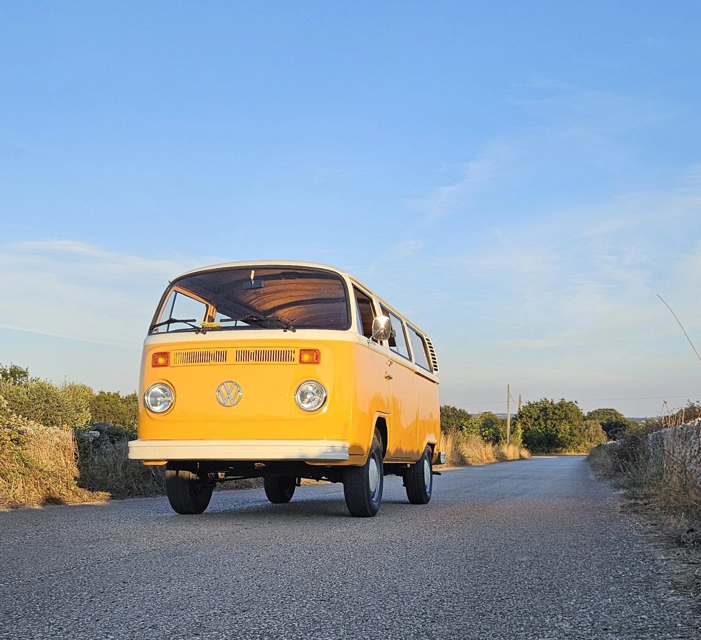
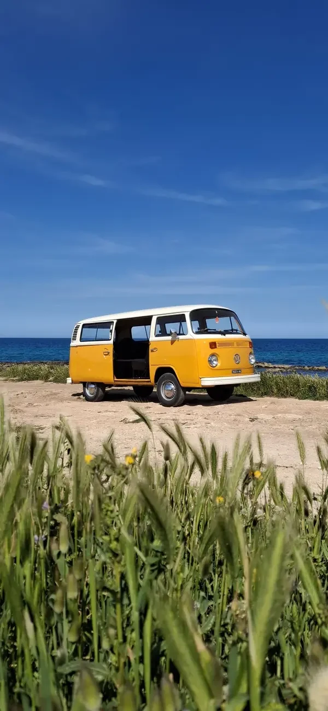

BALADES PRIVÉES DANS LES POUILLES · COMBI DE 1974
Les Pouilles.Vitre ouverte.
Un village à parcourir à pied, la mer un peu plus loin, des oliviers entre deux arrêts. Notre combi jaune vous emmène avec son chauffeur et jusqu’à huit places pour votre groupe.
Préparer notre baladeLe parcours, la durée et le tarif se décident ensemble.
QUELQUES ENVIES DE DÉTOUR
Par ici.
Ou par là, si ça vous dit.
Ces parcours donnent des idées. Choisissez celui qui vous tente : nous préciserons ensemble le départ, les arrêts et les horaires avant de vous proposer un devis.
 01 / 03
01 / 03Du blanc, de la pierre.
Et notre combi jaune.
Les trulli d’Alberobello, les ruelles de Locorotondo, une promenade à Martina Franca. Entre les étapes, la vallée d’Itria défile à travers les vitres du combi.
- Alberobello
- Locorotondo
- Martina Franca
Aujourd’hui,
on descend vers la mer.
On quitte les trulli pour rejoindre Monopoli et Polignano a Mare. Nous choisissons ensemble les arrêts et le temps à consacrer à chaque ville.
- Alberobello
- Monopoli
- Polignano a Mare
Et si on passait
par Conversano ?
Depuis Alberobello, un parcours par Castellana Grotte jusqu’à Conversano. Un départ en fin d’après-midi peut aussi être envisagé : parlons-en en préparant la sortie.
- Alberobello
- Castellana Grotte
- Conversano
Les étapes sont des suggestions. Le parcours définitif sera précisé dans le devis.

LE COMBI EST POUR VOUS
Vous venez à deux ?
Ou avec des amis ?
La balade est privée, pour votre groupe de huit passagers maximum, avec chauffeur. Dites-nous où vous logez et ce que vous aimeriez découvrir. Nous préparons un parcours adapté aux distances et au temps dont vous disposez.
Le temps de s’arrêter
La durée et les pauses sont convenues avant le départ.
Votre groupe, tout simplement
Une balade privée pour huit passagers maximum.
Un rendez-vous précis
Le point de départ et le retour font partie du programme.
REGARDONS QUAND PARTIR
Vous serez quand
dans les Pouilles ?
Une date, le nombre de voyageurs et un lieu de départ : nous pouvons commencer avec ces quelques renseignements, même si le programme reste à préciser.
Vous échangez directement avec nous.
La balade se dessine.
Relisez les détails, puis ouvrez WhatsApp pour nous envoyer votre demande.
Ouvrir WhatsAppNous vous répondrons avec la disponibilité et le devis.
La réservation sera confirmée ensuite.
AVANT DE MONTER À BORD
Quelques précisions.
Combien de temps dure la balade ?
La durée est définie avec vous selon le parcours et les arrêts souhaités. Le devis indique le programme, la durée prévue et le tarif.
Peut-on changer les étapes ?
Bien sûr. Les parcours présentés sont des suggestions. Indiquez-nous les lieux qui vous intéressent : nous vérifions les distances et les horaires avant de confirmer.
Qu’est-ce qui est compris ?
La balade privée en combi avec chauffeur, le carburant pour le parcours convenu et les arrêts prévus. Les éventuelles visites, entrées, dégustations ou repas demandés sont étudiés et précisés séparément dans le devis.
Combien de personnes peuvent participer ?
Nous organisons les balades pour huit passagers maximum, en plus du chauffeur. Précisez le nombre de voyageurs dans votre demande.
Le parcours vous appartient.
La place côté fenêtre aussi.